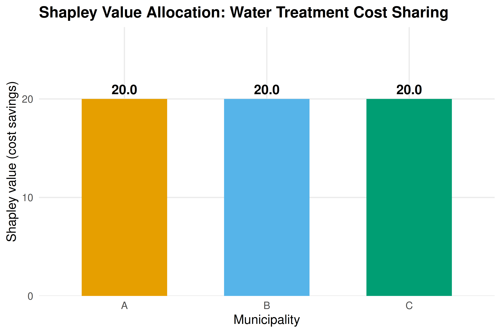

9 Cooperative Game Theory
An introduction to cooperative game theory with transferable utility. Covers the characteristic function, the core, and the Shapley value with computational examples in R, including a worked cost-sharing problem for three municipalities.
Learning objectives
- Define a transferable-utility (TU) game using its characteristic function and explain how it differs from non-cooperative models.
- Compute the core of a cooperative game and determine whether a given allocation lies in the core.
- Calculate the Shapley value for small games by hand and in R, and interpret its fairness properties.
- Apply cooperative game theory to practical cost-sharing and voting-power problems.
9.1 Motivation
Non-cooperative game theory, as developed in 4 and preceding chapters, models strategic interaction by focusing on individual players’ strategies and the equilibria that emerge. But many real-world situations are better described by asking which coalitions can form and how the resulting surplus should be divided. When three municipalities consider building a shared water treatment plant, the key questions are not about individual strategic moves but about which subsets of towns benefit from cooperating and how the cost savings should be split.
Cooperative game theory, whose foundations were laid by Neumann & Morgenstern (1944), takes coalitions as the primitive unit of analysis. Instead of specifying each player’s strategy set, a cooperative game specifies the worth (or value) that each possible coalition can generate. The central solution concepts — the core and the Shapley value — then determine which divisions of the total payoff are stable against defection and which are uniquely fair.
This chapter focuses on transferable-utility (TU) games, where utility can be freely redistributed among coalition members (e.g., via monetary side payments). We introduce the characteristic function, define stability and fairness concepts, and implement everything computationally in R. For R packages that automate many of these calculations, see 12 and 11.
9.2 Theory
9.2.1 Characteristic function games
A TU cooperative game is a pair \((N, v)\) where:
- \(N = \{1, 2, \ldots, n\}\) is the set of players.
- \(v : 2^N \to \mathbb{R}\) is the characteristic function assigning a value \(v(S)\) to each coalition \(S \subseteq N\), with \(v(\emptyset) = 0\).
The value \(v(S)\) represents the total payoff that members of \(S\) can guarantee themselves by cooperating, regardless of what players outside \(S\) do. A game is superadditive if \(v(S \cup T) \geq v(S) + v(T)\) for all disjoint \(S, T \subseteq N\), meaning that merging coalitions never destroys value.
9.2.2 Imputations
An imputation is a payoff vector \(x = (x_1, \ldots, x_n)\) satisfying:
- Efficiency: \(\sum_{i \in N} x_i = v(N)\).
- Individual rationality: \(x_i \geq v(\{i\})\) for all \(i \in N\).
Efficiency requires that the grand coalition’s total value is fully distributed. Individual rationality ensures no player receives less than they could obtain alone.
9.2.3 The core
Definition: The Core
The core of a TU game \((N, v)\) is the set of imputations \(x\) such that no coalition has an incentive to deviate:
\[\begin{equation} \sum_{i \in S} x_i \geq v(S) \quad \text{for all } S \subseteq N \tag{9.1} \end{equation}\]
An allocation in the core is stable in the sense that no subset of players can do better by breaking away from the grand coalition. The core may be empty (some games have no stable allocation), a single point, or a convex polytope.
9.2.4 The Shapley value
While the core captures stability, it does not provide a unique solution. The Shapley value provides a unique allocation based on fairness axioms.
Definition: Shapley Value
The Shapley value of player \(i\) in a TU game \((N, v)\) is:
\[\begin{equation} \phi_i(v) = \sum_{S \subseteq N \setminus \{i\}} \frac{|S|!\,(n - |S| - 1)!}{n!} \left[ v(S \cup \{i\}) - v(S) \right] \tag{9.2} \end{equation}\]
The term \(v(S \cup \{i\}) - v(S)\) is player \(i\)’s marginal contribution to coalition \(S\). The Shapley value averages this marginal contribution over all possible orderings in which the grand coalition could be assembled. It is the unique allocation satisfying four axioms: efficiency, symmetry, additivity, and the null-player property.
As Osborne (2004, Chapter 18) emphasizes, the Shapley value can be interpreted as the expected marginal contribution of a player when players join the coalition in a uniformly random order.
9.3 Implementation in R
9.3.1 Defining a cooperative game
We consider a three-player cost-sharing game. Three municipalities (A, B, C) can build a water treatment plant individually or in coalition. The costs are:
| Coalition | Cost | Savings \(v(S)\) |
|---|---|---|
| {A} | 100 | 0 |
| {B} | 140 | 0 |
| {C} | 120 | 0 |
| {A, B} | 200 | 40 |
| {A, C} | 180 | 40 |
| {B, C} | 220 | 40 |
| {A, B, C} | 300 | 60 |
The characteristic function \(v(S)\) measures cost savings relative to individual construction. We normalize \(v(\{i\}) = 0\) for each individual player.
# Define the 3-player TU game (cost savings)
players <- c("A", "B", "C")
n <- length(players)
# Characteristic function: value of each coalition
# Using binary encoding: A=1, B=2, C=4
v <- c(
"0" = 0, # empty
"A" = 0, # {A}
"B" = 0, # {B}
"C" = 0, # {C}
"AB" = 40, # {A, B}
"AC" = 40, # {A, C}
"BC" = 40, # {B, C}
"ABC" = 60 # {A, B, C}
)
cat("Characteristic function v(S):\n")#> Characteristic function v(S):
for (name in names(v)) {
if (name != "0") {
cat(sprintf(" v({%s}) = %d\n",
paste(strsplit(name, "")[[1]], collapse = ", "), v[name]))
}
}#> v({A}) = 0
#> v({B}) = 0
#> v({C}) = 0
#> v({A, B}) = 40
#> v({A, C}) = 40
#> v({B, C}) = 40
#> v({A, B, C}) = 609.3.2 Computing the Shapley value
# Permutation generator (no external dependencies)
permn <- function(x) {
if (length(x) <= 1) return(list(x))
result <- list()
for (i in seq_along(x)) {
rest <- permn(x[-i])
for (p in rest) result <- c(result, list(c(x[i], p)))
}
result
}
# Compute Shapley value by enumeration of permutations
compute_shapley <- function(players, v_func) {
n <- length(players)
perms <- permn(players)
marginals <- matrix(0, nrow = length(perms), ncol = n,
dimnames = list(NULL, players))
for (k in seq_along(perms)) {
perm <- perms[[k]]
for (i in seq_along(perm)) {
player <- perm[i]
if (i == 1) {
predecessors <- character(0)
} else {
predecessors <- perm[1:(i - 1)]
}
coal_with <- paste(sort(c(predecessors, player)), collapse = "")
coal_without <- paste(sort(predecessors), collapse = "")
if (coal_without == "") coal_without <- "0"
marginals[k, player] <- v_func[coal_with] - v_func[coal_without]
}
}
shapley_vals <- colMeans(marginals)
list(values = shapley_vals, marginals = marginals)
}
shapley_result <- compute_shapley(players, v)
shapley_vals <- shapley_result$values
cat("Shapley values:\n")#> Shapley values:#> phi(A) = 20.0000
#> phi(B) = 20.0000
#> phi(C) = 20.0000
cat(sprintf("\nSum of Shapley values: %.4f (should equal v(N) = %d)\n",
sum(shapley_vals), v["ABC"]))#>
#> Sum of Shapley values: 60.0000 (should equal v(N) = 60)9.3.3 Checking the core
# An allocation is in the core if it satisfies all coalition constraints
check_core <- function(x, players, v_func) {
n <- length(players)
violations <- character(0)
# Check all non-empty subsets
for (k in 1:(2^n - 1)) {
bits <- as.integer(intToBits(k)[1:n])
coalition <- players[bits == 1]
coal_key <- paste(sort(coalition), collapse = "")
coal_val <- v_func[coal_key]
alloc_sum <- sum(x[coalition])
if (alloc_sum < coal_val - 1e-10) {
violations <- c(violations,
sprintf("{%s}: sum = %.2f < v = %.0f",
paste(coalition, collapse = ", "),
alloc_sum, coal_val))
}
}
list(in_core = length(violations) == 0, violations = violations)
}
# Check if Shapley value is in the core
core_result <- check_core(shapley_vals, players, v)
cat("Is the Shapley value in the core? ",
ifelse(core_result$in_core, "YES", "NO"), "\n")#> Is the Shapley value in the core? YES
if (!core_result$in_core) {
cat("Violations:\n")
for (viol in core_result$violations) cat(" ", viol, "\n")
}
# Display all coalition constraints
cat("\nCore constraints:\n")#>
#> Core constraints:
coalitions <- list(
c("A"), c("B"), c("C"),
c("A", "B"), c("A", "C"), c("B", "C")
)
for (coal in coalitions) {
coal_key <- paste(sort(coal), collapse = "")
cat(sprintf(" x(%s) = %.2f >= v({%s}) = %d : %s\n",
paste(coal, collapse = " + "),
sum(shapley_vals[coal]),
paste(coal, collapse = ", "),
v[coal_key],
ifelse(sum(shapley_vals[coal]) >= v[coal_key] - 1e-10,
"satisfied", "VIOLATED")))
}#> x(A) = 20.00 >= v({A}) = 0 : satisfied
#> x(B) = 20.00 >= v({B}) = 0 : satisfied
#> x(C) = 20.00 >= v({C}) = 0 : satisfied
#> x(A + B) = 40.00 >= v({A, B}) = 40 : satisfied
#> x(A + C) = 40.00 >= v({A, C}) = 40 : satisfied
#> x(B + C) = 40.00 >= v({B, C}) = 40 : satisfied9.3.4 Publication figure: Shapley value comparison
shapley_df <- tibble(
player = factor(players, levels = players),
shapley = shapley_vals[players]
)
p_shapley <- ggplot(shapley_df, aes(x = player, y = shapley, fill = player)) +
geom_col(width = 0.6, show.legend = FALSE) +
geom_text(aes(label = sprintf("%.1f", shapley)),
vjust = -0.5, size = 4, fontface = "bold") +
scale_fill_manual(values = okabe_ito[1:3]) +
scale_y_continuous(name = "Shapley value (cost savings)",
limits = c(0, max(shapley_vals) * 1.3),
expand = expansion(mult = c(0, 0.05))) +
scale_x_discrete(name = "Municipality") +
labs(title = "Shapley Value Allocation: Water Treatment Cost Sharing") +
theme_publication()
p_shapley
Figure 9.1: Shapley values for the three-player water treatment cost-sharing game. Each bar represents a municipality’s fair share of the total cost savings (60 units) based on average marginal contributions across all coalition formation orders. The Shapley value assigns equal shares (20 each) due to the symmetric structure of pair-wise savings in this game.
save_pub_fig(p_shapley, "shapley-values-3player")9.3.5 Marginal contributions table
# Show marginal contributions in each ordering
perms <- permn(players)
mc_table <- tibble(
ordering = sapply(perms, paste, collapse = " -> "),
mc_A = shapley_result$marginals[, "A"],
mc_B = shapley_result$marginals[, "B"],
mc_C = shapley_result$marginals[, "C"]
)
mc_table |>
gt() |>
tab_header(
title = "Marginal Contributions by Player Ordering",
subtitle = "Each row shows one permutation and the marginal contribution of each player when joining in that order"
) |>
cols_label(
ordering = "Ordering",
mc_A = "MC(A)",
mc_B = "MC(B)",
mc_C = "MC(C)"
) |>
cols_align(align = "center", columns = starts_with("mc")) |>
grand_summary_rows(
fns = list(Average = ~ mean(.)),
columns = starts_with("mc"),
fmt = ~ fmt_number(., decimals = 2)
)| Marginal Contributions by Player Ordering | ||||
| Each row shows one permutation and the marginal contribution of each player when joining in that order | ||||
| Ordering | MC(A) | MC(B) | MC(C) | |
|---|---|---|---|---|
| A -> B -> C | 0 | 40 | 20 | |
| A -> C -> B | 0 | 20 | 40 | |
| B -> A -> C | 40 | 0 | 20 | |
| B -> C -> A | 20 | 0 | 40 | |
| C -> A -> B | 40 | 20 | 0 | |
| C -> B -> A | 20 | 40 | 0 | |
| Average | — | 20.00 | 20.00 | 20.00 |
9.4 Worked example
We walk through the Shapley value calculation for municipality A in the water treatment cost-sharing game.
Step 1: List all permutations. With three players, there are \(3! = 6\) orderings.
Step 2: Compute A’s marginal contribution in each ordering.
- A-B-C: A joins the empty coalition. \(v(\{A\}) - v(\emptyset) = 0 - 0 = 0\).
- A-C-B: Same as above. \(MC(A) = 0\).
- B-A-C: A joins {B}. \(v(\{A,B\}) - v(\{B\}) = 40 - 0 = 40\).
- C-A-B: A joins {C}. \(v(\{A,C\}) - v(\{C\}) = 40 - 0 = 40\).
- B-C-A: A joins {B,C}. \(v(\{A,B,C\}) - v(\{B,C\}) = 60 - 40 = 20\).
- C-B-A: A joins {B,C}. Same as above. \(MC(A) = 20\).
Step 3: Average the marginal contributions.
\[\phi_A = \frac{0 + 0 + 40 + 40 + 20 + 20}{6} = \frac{120}{6} = 20\]
Step 4: Verify efficiency. By symmetry of the game (all two-player coalitions have the same value), \(\phi_A = \phi_B = \phi_C = 20\). The sum is \(20 + 20 + 20 = 60 = v(N)\), confirming efficiency.
# Verify step by step for player A
mc_A <- c(
v["A"] - v["0"], # A first
v["A"] - v["0"], # A first (other order)
v["AB"] - v["B"], # A joins B
v["AC"] - v["C"], # A joins C
v["ABC"] - v["BC"], # A joins BC
v["ABC"] - v["BC"] # A joins BC (other order)
)
cat("Player A marginal contributions:", mc_A, "\n")#> Player A marginal contributions: 0 0 40 40 20 20#> Shapley value for A: 120 / 6 = 20.0000
# Summary
final_allocation <- tibble(
Municipality = players,
`Stand-alone cost` = c(100, 140, 120),
`Shapley share of savings` = shapley_vals[players],
`Cost after sharing` = c(100, 140, 120) - shapley_vals[players]
)
final_allocation |>
gt() |>
tab_header(
title = "Final Cost Allocation via Shapley Value"
) |>
fmt_number(columns = c(`Shapley share of savings`, `Cost after sharing`),
decimals = 1) |>
cols_align(align = "center")| Final Cost Allocation via Shapley Value | |||
| Municipality | Stand-alone cost | Shapley share of savings | Cost after sharing |
|---|---|---|---|
| A | 100 | 20.0 | 80.0 |
| B | 140 | 20.0 | 120.0 |
| C | 120 | 20.0 | 100.0 |
Step 5: Interpret. Each municipality saves 20 units from cooperation. Municipality A’s cost drops from 100 to 80, B’s from 140 to 120, and C’s from 120 to 100. The Shapley value splits the 60 units of savings equally because the game’s structure treats all pair-wise coalitions symmetrically. In an asymmetric game — say, where {A,B} saves more than {A,C} — the Shapley value would allocate more savings to the players whose participation creates more value.
9.5 Extensions
Cooperative game theory extends in several important directions:
- Non-transferable utility (NTU) games drop the assumption that utility can be freely redistributed. The solution concepts become more complex; the NTU Shapley value and the Nash bargaining solution are commonly used.
- Voting games are a special class of TU games where each coalition either wins (value 1) or loses (value 0). The Shapley–Shubik power index measures each voter’s influence and is widely applied in political science.
- Cost allocation problems in operations research use the Shapley value and the nucleolus (which minimizes the maximum dissatisfaction of any coalition) to allocate shared infrastructure costs.
- Computational complexity. Computing the Shapley value requires summing over all \(2^n\) coalitions (or all \(n!\) permutations), which becomes infeasible for large \(n\). Approximation algorithms based on random sampling of permutations are used in practice; see 12 and 11 for R implementations.
For the mathematical foundations of cooperative game theory, see Neumann & Morgenstern (1944) and Osborne (2004, Chapters 16–18). A computational perspective is given in Shoham & Leyton-Brown (2009).
Exercises
Asymmetric savings. Modify the water treatment game so that \(v(\{A,B\}) = 50\), \(v(\{A,C\}) = 30\), \(v(\{B,C\}) = 40\), and \(v(\{A,B,C\}) = 80\). Compute the Shapley value for each player. Which municipality benefits most from cooperation?
Core membership. For the modified game in Exercise 1, determine whether the Shapley value lies in the core. If not, find an allocation that does lie in the core, or prove that the core is empty.
Voting power. Consider a weighted voting game with four players and weights \((4, 3, 2, 1)\) and a quota of 6 (a coalition wins if its total weight is at least 6). Compute the Shapley–Shubik power index for each player. Compare it to each player’s weight share. (Hint: enumerate all \(4! = 24\) orderings and identify each player’s pivot position.)
Glove game. In the “glove game,” players 1 and 2 each have a left glove and player 3 has a right glove. A pair of gloves (one left, one right) is worth 1; individual gloves are worthless. Write the characteristic function, compute the Shapley value, and find the core. Is the Shapley value in the core?
Scaling to larger games. Implement a Monte Carlo approximation of the Shapley value that samples \(K\) random permutations instead of enumerating all \(n!\). Test it on a 10-player game where \(v(S) = |S|^2\) and compare the approximation error for \(K = 100\), \(K = 1000\), and \(K = 10000\).
Solutions appear in D.